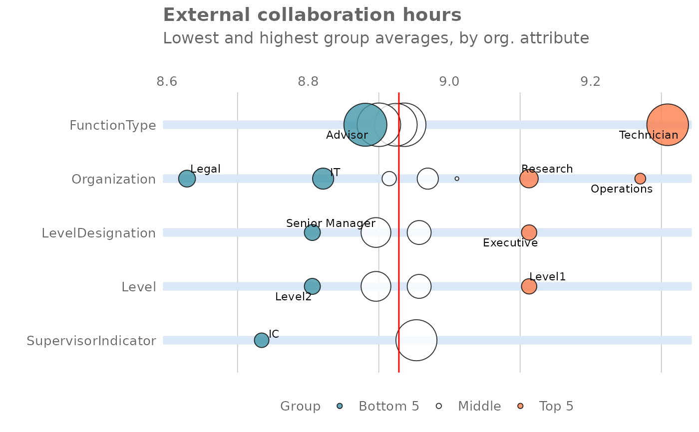

Rank groups with high External Collaboration Hours
external_rank.RdThis function scans a Standard Person Query for groups with high levels of External Collaboration. Returns a plot by default, with an option to return a table with all groups (across multiple HR attributes) ranked by hours of External Collaboration.
Usage
external_rank(
data,
hrvar = extract_hr(data),
mingroup = 5,
mode = "simple",
plot_mode = 1,
return = "plot"
)Arguments
- data
A Standard Person Query dataset in the form of a data frame.
- hrvar
String containing the name of the HR Variable by which to split metrics. Defaults to
"Organization". To run the analysis on the total instead of splitting by an HR attribute, supplyNULL(without quotes).- mingroup
Numeric value setting the privacy threshold / minimum group size. Defaults to 5.
- mode
String to specify calculation mode. Must be either:
"simple""combine"
- plot_mode
Numeric vector to determine which plot mode to return. Must be either
1or2, and is only used whenreturn = "plot".1: Top and bottom five groups across the data population are highlighted2: Top and bottom groups per organizational attribute are highlighted
- return
String specifying what to return. This must be one of the following strings:
"plot"(default)"table"
See
Valuefor more information.
Details
Uses the metric Collaboration_hours_external.
See create_rank() for applying the same analysis to a different metric.
See also
Other Visualization:
afterhours_dist(),
afterhours_fizz(),
afterhours_line(),
afterhours_rank(),
afterhours_summary(),
afterhours_trend(),
collaboration_area(),
collaboration_dist(),
collaboration_fizz(),
collaboration_line(),
collaboration_rank(),
collaboration_sum(),
collaboration_trend(),
create_bar_asis(),
create_bar(),
create_boxplot(),
create_bubble(),
create_dist(),
create_fizz(),
create_inc(),
create_line_asis(),
create_line(),
create_period_scatter(),
create_rank(),
create_sankey(),
create_scatter(),
create_stacked(),
create_tracking(),
create_trend(),
email_dist(),
email_fizz(),
email_line(),
email_rank(),
email_summary(),
email_trend(),
external_dist(),
external_fizz(),
external_line(),
external_sum(),
hr_trend(),
hrvar_count(),
hrvar_trend(),
keymetrics_scan(),
meeting_dist(),
meeting_fizz(),
meeting_line(),
meeting_rank(),
meeting_summary(),
meeting_trend(),
one2one_dist(),
one2one_fizz(),
one2one_freq(),
one2one_line(),
one2one_rank(),
one2one_sum(),
one2one_trend()
Other After-hours Collaboration:
afterhours_dist(),
afterhours_fizz(),
afterhours_line(),
afterhours_rank(),
afterhours_summary(),
afterhours_trend()
Examples
# Return rank table
external_rank(data = pq_data, return = "table")
#> # A tibble: 21 × 4
#> hrvar group External_collaboration_hours n
#> <chr> <chr> <dbl> <int>
#> 1 LevelDesignation Director 6.26 6
#> 2 SupervisorIndicator Manager+ 6.26 6
#> 3 FunctionType Sales 4.96 11
#> 4 FunctionType Marketing 2.90 12
#> 5 Organization Sales and Marketing 2.87 31
#> 6 Organization HR 2.70 21
#> 7 Organization Finance 2.64 27
#> 8 FunctionType G_and_A 2.62 6
#> 9 FunctionType Customer_Service 2.54 12
#> 10 WeekendDays [SUNDAY, SATURDAY] 2.44 100
#> # ℹ 11 more rows
# Return plot
external_rank(data = pq_data, return = "plot")
